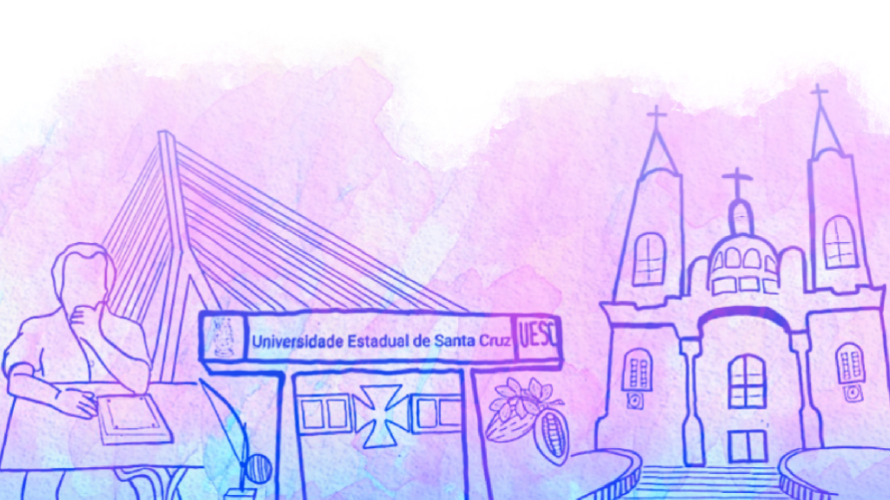

Normas de Trabalho
Elaboração de Trabalhos Científicos

As Normas Gerais para apresentação de Trabalhos Científicos aceitos pela Comissão Científica deverão estar de
acordo com a NBR 6028 da Associação Brasileira de Normas Técnicas (ABNT).
E, para tanto, a equipe responsável se envolverá primando pela qualidade dos Trabalhos Científicos e com
posterior apresentação e publicação dos Anais e/ou E-book.
Informações Gerais
Todo Trabalho Científico inscrito deve seguir as normas dispostas neste Regulamento, caso contrário será automaticamente recusado.
Só serão avaliados os Trabalhos Científicos em que todos os autores estejam inscritos no evento.
Cada proponente poderá ter seu nome tanto em trabalho individual como em grupo, com número máximo de até 04
(quatro) autores. Cuidar, no entanto, para que a inscrição como primeiro autor seja colocada em número
reduzido de trabalhos (recomendável até 05 trabalhos), pois o primeiro autor será considerado como
apresentador do trabalho na distribuição das salas e horários, se devidamente aprovado
pela Comissão Científica.
O Trabalho Científico, individual ou em grupo, deverá ser resultante de pesquisa concluída ou em andamento
que apresente análise preliminar de: pesquisa científica, relato de experiência, estudo de caso,
elato de estágio supervisionado.
Todo Trabalho Científico deverá dispor de seu tema articulado a um dos Eixos Temáticos propostos conforme a Comissão Científica.
Eixos Temáticos
- Ciências da Educação
- História e Memória
- Políticas Públicas Educacionais
- Pedagogia em espaço escola e não escolar
- Práticas Pedagógicas
- Educação Inclusiva
- Universidade-Escolas
O primeiro autor (apresentador) deve ter realizado sua inscrição, para que seja confirmada a submissão
do trabalho. A certificação de Trabalho Científico dependerá exclusivamente do recolhimento da devida
inscrição e apresentação.
O Trabalho Científico, deverá ser enviado em duas (02) vias, uma identificada e outra totalmente sem
identificação dos autores, acompanhado(as) da(s) instituição(ões) e outras informações no corpo do
resumo que possibilitem a Coordenação CCE-UESC/2023, a respectiva identificação e autoria do
Trabalho Científico. Enviar para o e-mail: congressocceuesc2023@gmail.com
A avaliação dos Trabalhos Científicos, sem identificação, ocorrerá pela
Comissão Científica e, para tanto, deverão atender a todos os critérios especificados neste Regulamento e,
encaminhado aos pareceristas ad hoc, não cabendo recurso ou justificativa para a não aceitação do trabalho,
sob qualquer hipótese.
A lista dos Trabalhos Científicos aprovados será divulgada no site do evento na
data indicada no cronograma previamente divulgado.
Lançamento de Livro
Para nos enviar uma proposta de lançamento de livro, será necessário realizar o preenchimento do formulário que pode ser baixado facilmente pelo botão Formulário logo a baixo.
Pôster
O Pôster tem como finalidade a apresentação de trabalhos elaborados pelos autores, oriundos de pesquisas em andamento e/ou experiências de ensino. O tema deste deverá se relacionar com um dos eixos temáticos do Congresso.
Comunicação Oral
A Comunicação Oral têm como finalidade a apresentação de trabalhos elaborados pelos autores, decorrentes de pesquisas concluídas ou experiências de ensino consolidadas. O tema deste deverá se relacionar com um dos eixos temáticos do Congresso.
| Item | Data de Realização |
|---|---|
|
Inscrições com apresentação de Trabalho Científico. Resumo Expandido para o Pôster. Artigo para a Comunicação Oral. |
PRORROGADO O PRAZO! 25 de FEVEREIRO de 2023 até 30 de MARÇO de 2023 |
| Notificação de aceite do Trabalho Científico aos autores. | 05 de ABRIL de 2023 |
| Apresentação dos Trabalhos Científicos. | 12 e 13 de ABRIL de 2023 |